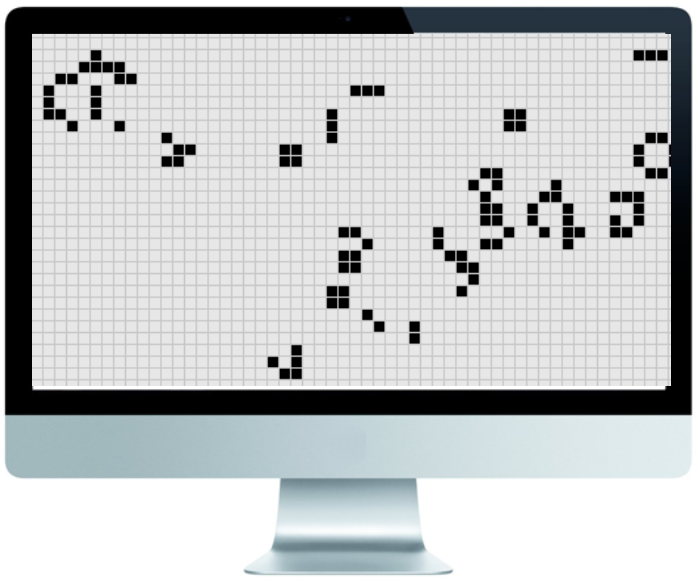

Projects

Parallelized Game of Life
University of Rochester
Programming Language Design and Implementation | Fall 2016
Simulated John Conway's Game of Life using multithreading, both by directly creating threads and by using Java's Executor facilities. Wrote a formal report on the effect of thread number on execution speed.
Experience
Software Development Intern
IBM
Poughkeepsie, NY | Summer 2016
Added tagging and filtering functionality to breakpoints used by system testers on zOS mainframe.
Modified a tool to determine whether a bilingual C and Assembler macro are equivalent.
Participated in code reviews and presented my project in a poster session at the end of the summer.
Firmware Test Automation Intern
IBM
Poughkeepsie, NY | Summer 2015
Automated testing of functions and communication paths of the Hardware Management Console for zSystems.
Helped develop practices for code review and submission.
Used git for collaboration and version control.
Education
University of Rochester
Rochester, NY | Graduate May 2018
B.S. Computer Science
- 3.44 GPA
- Teacher's Assistant for CSC 171: The Science of Programming
- Extracurriculars:
- Varsity Crew
- Brass Choir
- STEM Initiative
- Women in Computing
Courses
Computer Science
- Programming Language Design and Implementation
- Computer Architecture
- Artificial Intelligence
- Web Programming
Linguistics and Languages
- Phonetics and Phonology
- Advanced Spanish Composition
- Beginning American Sign Language 1 and 2
Skills
Proficient in:
Java
C
Python
Experience with:
C++
Assembly
Currently learning:
Javascript
Haskell